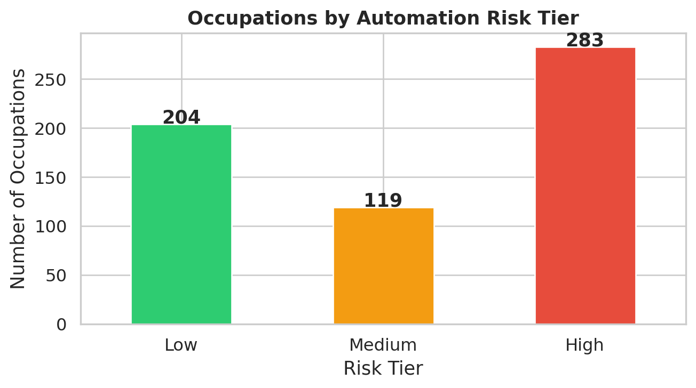
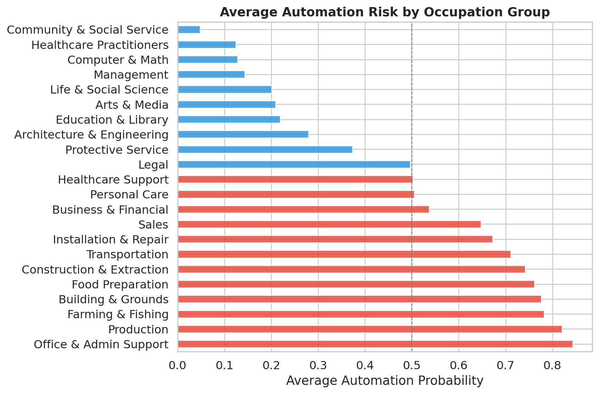
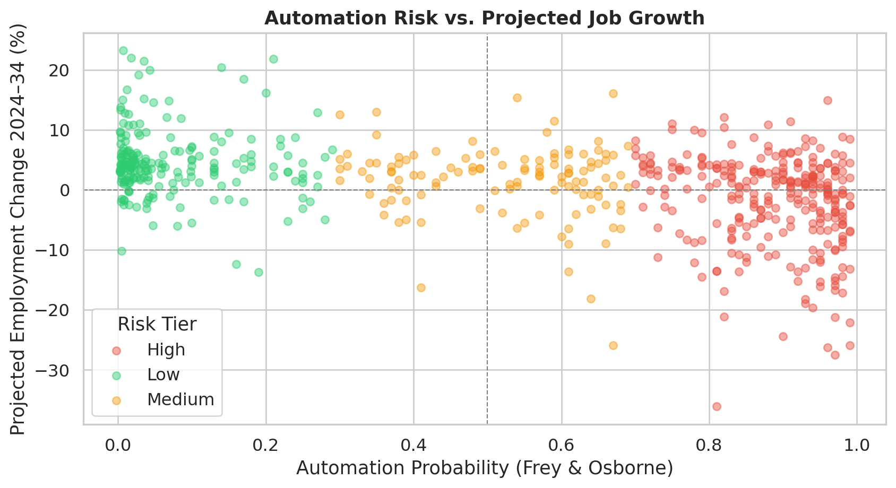
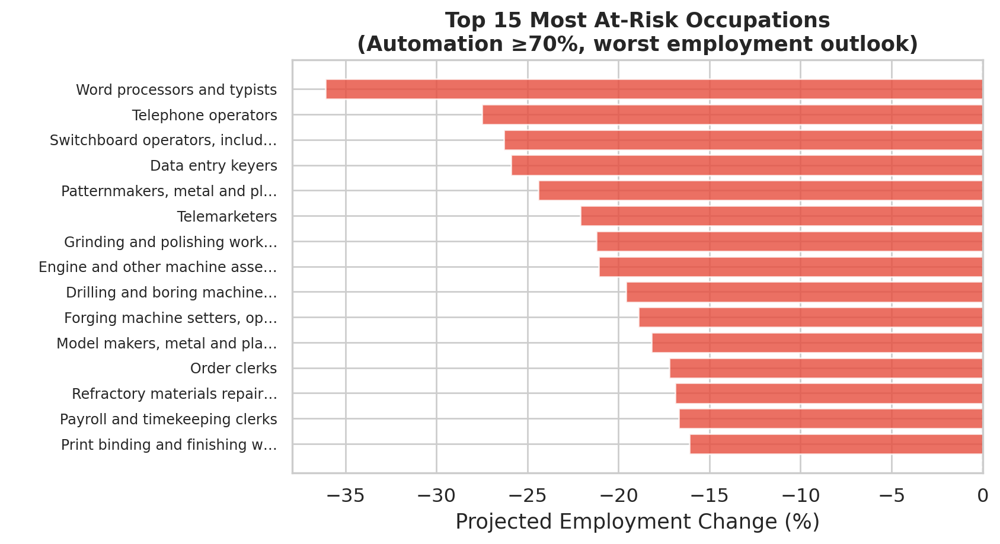
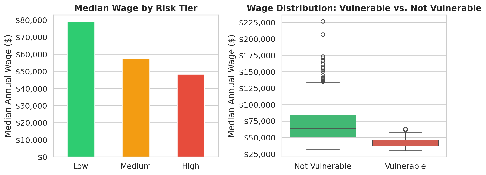
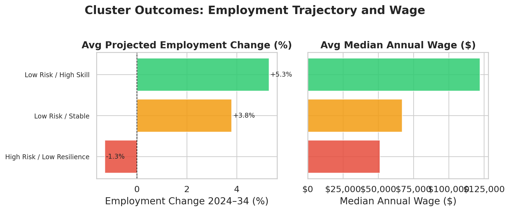
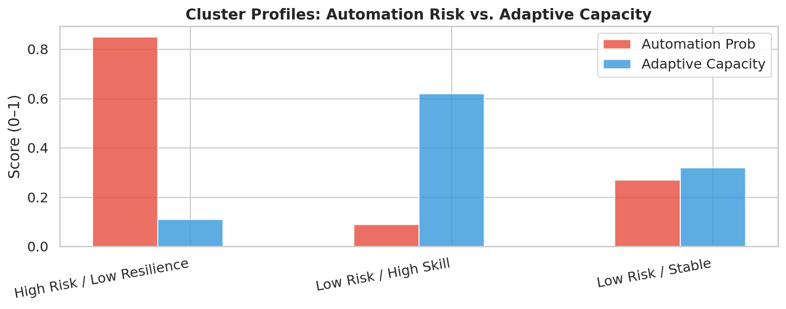
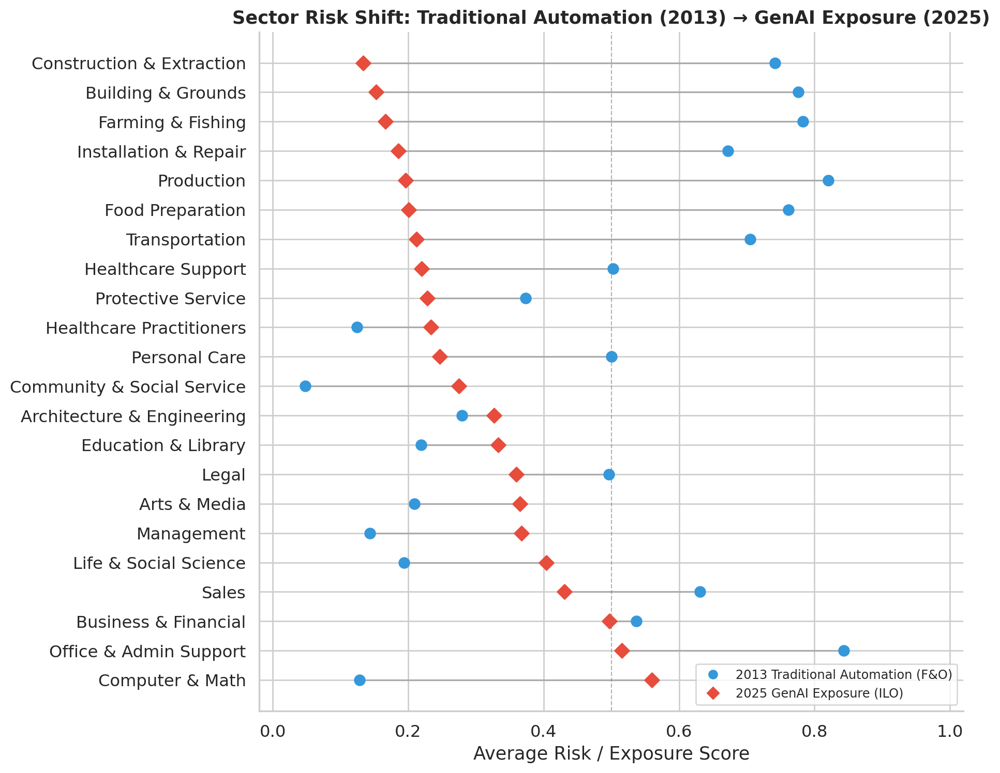
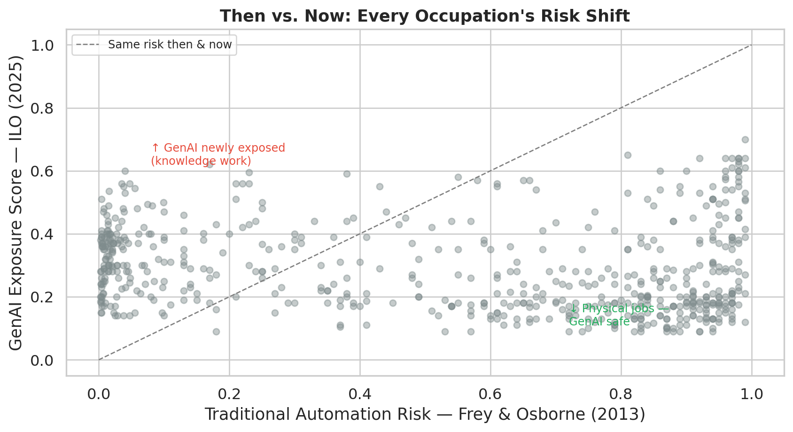

The Automation Paradox: Who Really Gets Hurt When AI Takes Over?
MIS502 Final Project — AI’s Impact on the Job Market
Executive Summary
Artificial intelligence is transforming the US labor market — but not in the simple “robots taking all jobs” narrative that dominates headlines. Using three authoritative real-world datasets — Frey & Osborne’s automation probability scores (2013), the Bureau of Labor Statistics’ 2024–2034 employment projections, and the ILO’s 2025 Generative AI Occupational Exposure Index — this report finds a more nuanced and more troubling pattern.
The Automation Paradox: most workers exposed to AI are currently seeing stable or growing employment. Yet hidden inside that aggregate is a concentrated crisis. Roughly 144 occupations (24% of analyzed jobs) combine high automation risk with low wages and low education — leaving workers with no economic safety net. These are the jobs where displacement is not a future concern but a present reality.
Key findings:
- 283 of 606 matched occupations carry high (>70%) automation risk — primarily in Office & Admin Support, Production, and Food Preparation
- High-risk occupations have a median wage of $48,350 — compared to $79,000 for low-risk occupations
- A linear regression confirms automation risk negatively predicts employment growth (coefficient: −4.15), but R² = 0.175 — meaning automation alone explains only 17.5% of the variation in job outcomes
- The most important protective factor is education + wage combined (adaptive capacity score), not automation risk alone
- A “Then vs. Now” comparison using the ILO 2025 GenAI Exposure Index reveals the risk map has fundamentally shifted: Computer & Math reversed from low traditional risk (13%) to highest GenAI exposure (56%), while Production and Construction — flagged as near-certain automation targets in 2013 — score among the lowest on GenAI exposure today. The workers we thought were safe may not be; the workers we feared for may be safer than expected from GenAI specifically.
1. Introduction
The question “Is AI taking our jobs?” has a frustrating honest answer: it depends on which jobs you’re watching. Aggregate employment statistics look healthy. But averages hide the distribution — and in labor economics, the distribution is everything.
This report investigates the structure of that distribution: which occupations are genuinely at risk, what makes some workers resilient and others vulnerable, and what the data says about where the US labor market is heading through 2034.
Research Questions
- Which occupations face the highest automation risk, and are those the same occupations projected to decline?
- Does automation risk alone predict employment change, or do other factors matter more?
- Can we identify a “vulnerability cluster” — occupations combining high automation exposure with low adaptive capacity?
2. Data Sources
Three datasets are combined for this analysis:
| Dataset | Source | Coverage | Role |
|---|---|---|---|
| Automation Probability Scores | Frey & Osborne (2013), The Future of Employment | 702 US occupations | Traditional automation baseline (“then”) |
| Employment Projections 2024–2034 | US Bureau of Labor Statistics | 832 occupations | Employment outlook |
| GenAI Occupational Exposure Index | Gmyrek et al. (2025), ILO Working Paper 140 | 427 ISCO-08 occupations | GenAI exposure (“now”) |
| Analysis dataset | Inner join F&O × BLS; left join ILO via crosswalk | 606 occupations, 99% with GenAI scores |
Frey & Osborne and BLS are joined on SOC codes (86% match rate). The ILO dataset uses ISCO-08 codes and is bridged via the BLS official ISCO-08 × SOC crosswalk, covering 600 of 606 occupations.
Note: A synthetic Kaggle dataset was evaluated and rejected. Preliminary analysis showed near-zero correlations between all numeric variables (r ≈ 0.001–0.012) — a hallmark of random generation with no internal signal. Real data produces real findings.
3. Automation Risk Distribution
The distribution is notably bimodal: most occupations cluster at the extremes (very high or very low risk) rather than the middle. This reflects the nature of work tasks — they tend to be either primarily routine (highly automatable) or primarily non-routine (resistant to automation), with fewer genuinely ambiguous cases.
By occupation group, the highest-risk sectors are Office & Administrative Support (84% average probability), Production (82%), Farming & Fishing (78%), and Building & Grounds (78%). The safest sectors are Community & Social Service (5%), Healthcare Practitioners (12%), Computer & Math (13%), and Management (14%).

4. The Core Relationship: Automation Risk vs. Job Growth

The scatter plot reveals the Automation Paradox visually. There is a clear negative trend — occupations with higher automation probability cluster toward the lower portion of the chart. But the relationship is wide and noisy. Many high-automation occupations still show positive projected employment growth. Automation risk is predictive but not deterministic.
Correlation: r = −0.414 between automation_prob and emp_change_pct. Moderate negative relationship. Linear regression R² = 0.175 — automation risk alone explains only 17.5% of variance in employment change, even after adding wage, education, and occupation group controls.
5. Who Is Most At Risk?

The most at-risk occupations combine near-certain automation probability (>95%) with declining employment projections: data entry keyers, word processors, insurance underwriters, credit authorizers, and watch repairers. These are not hypothetical future risks — BLS projects active job losses in all of them through 2034.
6. Who Is Safe?

The safest and fastest-growing occupations are concentrated in healthcare (nurse practitioners, physician assistants, home health aides) and technology (software developers, data scientists). These roles share common features: they require complex human judgment, physical dexterity in variable environments, deep domain expertise, or meaningful human interaction — all barriers to automation.
7. The Economic Divide

The wage data tells a stark story. High-risk occupations have a median annual wage of $48,350, compared to $79,000 for low-risk occupations — a $30,650 gap.
The box plot makes the distributional difference even clearer. Vulnerable occupations (high automation + low adaptive capacity) have a tightly compressed wage range centered at $40,260. Non-vulnerable occupations have a median of $63,280 with a wide spread extending into six figures. The workers most threatened by AI are also the least able to afford the retraining, relocation, or career transition that adaptation requires.
8. Cluster Analysis: Three Paths Forward
K-Means clustering (k=4, effectively 3 distinct segments) reveals three occupational trajectories:

| Cluster | Size | Avg Automation Prob | Avg Adaptive Capacity | Avg Wage | Projected Growth |
|---|---|---|---|---|---|
| High Risk / Low Resilience | 305 (50%) | 85.1% | 0.113 | $49,287 | −1.75% |
| Low Risk / Stable | 225 (37%) | 27.1% | 0.155 | $66,965 | +2.58% |
| Low Risk / High Skill | 70 (12%) | 9.0% | 0.625 | $126,322 | +5.51% |
The “High Risk / Low Resilience” cluster — 50% of matched occupations — faces declining employment with virtually no adaptive buffer. The “Low Risk / High Skill” cluster — only 12% of occupations — enjoys near-zero automation risk, strong job growth, and wages 2.5× higher than the at-risk group.
9. Then vs. Now: The GenAI Risk Shift (2013 → 2025)
The Frey & Osborne (2013) scores that underpin this report were groundbreaking for their era, but they measured a specific form of AI risk: algorithmic and robotic automation of routine tasks. A decade later, Generative AI — large language models, multimodal systems, code generation — presents a different kind of risk that targets a different kind of work. The ILO’s 2025 Generative AI Occupational Exposure Index (Gmyrek et al., ILO Working Paper 140) provides the most rigorous current estimate of that new risk, scored from 29,753 tasks across 427 ISCO-08 occupations.
Why this comparison matters: If the risk landscape has shifted, then policies and career advice built on 2013 assumptions may be protecting the wrong people and exposing the wrong sectors.
The Sector-Level Flip

The dumbbell chart above tells the story clearly. Every sector with a connector line pointing left (from blue to red dot) saw its risk fall moving from 2013 to 2025 — these are physical sectors where GenAI has no mechanism for displacement. Every sector with a line pointing right saw its risk rise — these are knowledge and information sectors that GenAI targets directly.
The largest reversals:
| Sector | 2013 Risk | 2025 GenAI Exposure | Δ |
|---|---|---|---|
| Computer & Math | 13% | 56% | +43 pp |
| Community & Social Service | 5% | 28% | +23 pp |
| Management | 14% | 37% | +22 pp |
| Arts & Media | 21% | 37% | +16 pp |
| Production | 82% | 20% | −62 pp |
| Building & Grounds | 78% | 15% | −62 pp |
| Construction | 74% | 13% | −61 pp |
The Occupation-Level Picture

The scatter plot places every occupation against a diagonal reference line. Points above the diagonal were underestimated by 2013 models — they face more GenAI exposure than traditional automation suggested. Points below were overestimated — high traditional automation risk that GenAI does not replicate.
The five most newly exposed occupations (largest positive delta):
| Occupation | Sector | Traditional Risk (2013) | GenAI Exposure (2025) | Δ | |
|---|---|---|---|---|---|
| 0 | Credit counselors | Business & Financial | 4% | 60% | +0.56 |
| 1 | Operations research analysts | Computer & Math | 4% | 56% | +0.53 |
| 2 | Securities, commodities, and financial s... | Sales | 2% | 54% | +0.52 |
| 3 | Mathematicians | Computer & Math | 5% | 56% | +0.51 |
| 4 | Writers and authors | Arts & Media | 4% | 55% | +0.51 |
The five most de-risked occupations (largest negative delta):
| Occupation | Sector | Traditional Risk (2013) | GenAI Exposure (2025) | Δ | |
|---|---|---|---|---|---|
| 0 | Sewers, hand | Production | 99% | 12% | -0.87 |
| 1 | Log graders and scalers | Farming & Fishing | 97% | 12% | -0.85 |
| 2 | Helpers--painters, paperhangers, plaster... | Construction & Extraction | 94% | 9% | -0.85 |
| 3 | Pesticide handlers, sprayers, and applic... | Building & Grounds | 97% | 13% | -0.84 |
| 4 | Cement masons and concrete finishers | Construction & Extraction | 94% | 10% | -0.84 |
What This Means
The 2013 automation literature and the 2025 GenAI exposure data agree on one thing: Office & Administrative Support is highly exposed (84% traditional, 52% GenAI). Clerical workers face sustained risk across both eras. But the agreement ends there.
GenAI differs from robotic automation in a fundamental way: it targets language, reasoning, and information synthesis — not physical manipulation. This is why writers, analysts, counselors, and mathematicians appear in the newly-exposed list, while brickmasons, sewers, and groundskeepers appear in the de-risked list. The physical dexterity barrier that protected manual workers from robotics also protects them from GenAI.
The policy implication is significant: retraining programs designed around the 2013 risk map may be solving the wrong problem. A displaced office worker retrained for a knowledge-intensive analytical role may be walking into the highest-GenAI-exposure sector. Healthcare and skilled trades — identified as safe harbors in the 2013 analysis — remain strong options under the 2025 lens.
10. Conclusions and Policy Implications
The Automation Paradox is real. Automation risk and employment decline are related (r = −0.414) but not synonymous. Many high-automation occupations still show positive growth projections — the paradox reflects that AI raises productivity and creates new roles even as it displaces specific tasks.
But the paradox masks a concentrated crisis. 144 occupations (23.8%) combine high automation exposure with wages and education too low to support adaptation. These workers are not benefiting from the productivity windfall of AI. They are absorbing the displacement costs with no safety net.
Three policy implications: 1. Targeted retraining, not general retraining. The vulnerable population is identifiable by occupation — Office & Admin Support, Production, Food Preparation. Broadly available training programs miss the specific workers at risk. 2. Wage floors matter as much as education. Adaptive capacity depends on both. Low-wage workers cannot access training, relocation, or extended job search even with higher education. 3. Healthcare investment is a hedge. The fastest-growing, safest occupations are concentrated in healthcare — a sector driven by demographics, not AI adoption. Policies that reduce barriers to healthcare careers (licensing, cost, geographic access) are simultaneously labor market policies.
Limitations: Frey & Osborne’s scores date to 2013 and reflect a pre-GenAI understanding of automation risk — which is why this report includes the ILO 2025 comparison in Section 9. Even so, the ILO scores are global (ISCO-08) and were validated using Polish worker surveys; US-specific GenAI adoption rates may differ. BLS projections are point estimates with unquantified uncertainty. The merged dataset covers 606 of the ~900 US occupations; 6 occupations have no ISCO-08 equivalent and are excluded from the then/now analysis only.
References
- Frey, C.B. & Osborne, M.A. (2013). The Future of Employment: How Susceptible Are Jobs to Computerisation? Oxford Martin School Working Paper.
- U.S. Bureau of Labor Statistics (2024). Employment Projections 2024–2034. U.S. Department of Labor. https://www.bls.gov/emp/
- Gmyrek, P., Berg, J., & Bescond, D. (2025). Generative AI and Jobs: A Refined Global Index of Occupational Exposure. ILO Working Paper 140. International Labour Organization. https://www.ilo.org/publications/generative-ai-and-jobs-refined-global-index-occupational-exposure
- Acemoglu, D. & Restrepo, P. (2018). Artificial Intelligence, Automation, and Work. NBER Working Paper 24196.
- Brookings Institution. Automation and Artificial Intelligence: How Machines Are Affecting People and Places.